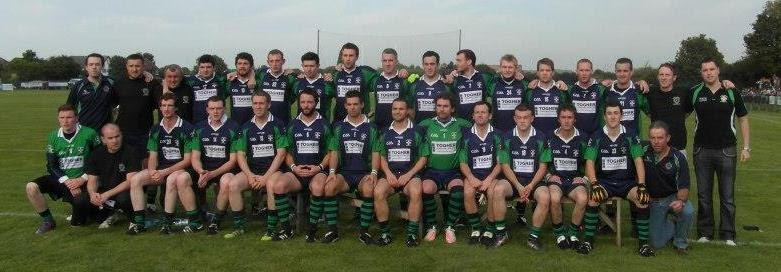
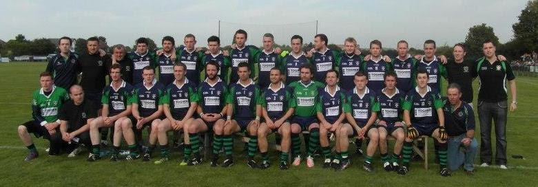

North London Shamrocks Player Profiles

Players hail from all over Ireland and locally from North London

Players hail from all over Ireland and locally from North London
 |
||||
| Galway | Carlow | Clare | Antrim | |
| Peter Capplis | Alan Donohue | Dublin | Cork | Armagh |
| Brian Galvin | Gearoid Duffy | Stephen Lally | Shane Hurley | Larry McKenna |
| Anthony Langan | Leitrim | Patrick Lynch | Tadhg O'Connor | Cavan |
| Peter Langan | Conor Higgins | Kildare | Ronan O'Sullivan | Derry |
| Daniel McDermott | Ryan Higgins | Kilkenny | Kerry | Conaill Doherty |
| Joe McHugh | Mayo | Adam Holden | Ciaran Cronin | Niall Doherty |
| Niall McKevitt | Kevin O'Flaherty | Laois | Colm Cronin | Thomas Doherty |
| Colin O'Mahony | Mick Gallagher | Paddy Madigan | Donal O'Connor | Donegal |
| Dannan O'Meachair | Shane Gallagher | Longford | Limerick | Mark Anderson |
| James O'Sullivan | Jarlath Glynn | Louth | John Harnett | Owen Doherty |
| James Power | Derek McNulty | Graham Carr | Sean Sullivan | Gerard Duffy |
| Sean Ruane | Vinny Murphy | Meath | Tipperary | Charlie Maloney |
| Darren Scannell | Patrick Tighe | Andy Coogan | Brendan McCafferty | |
| Liam Shine | Roscommon | Kenny Fagan | Mickey O'Donnell | |
| David Siddall | Michael Gorham | Mick O'Hagan | Shaun Shields | |
| Paul Ronane | Andrew Power | Joe Sweeney | ||
| Sligo | Offaly | Down | ||
| Ciaran Collery | WestMeath | Fermanagh | ||
| Enda Kellagher | Wexford | Monaghan | ||
| Thomas McLoughlin | Wicklow | Declan Treanor | ||
| Peter Rafferty | Andy Cummins | Tyrone | ||
| Eamon Scanlon | Gavin Pepperd | Declan Treanor | ||
| Paul Tierney |